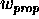
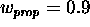

Before we try to maintain a specific altitude, we need to be able to control our rate of climb. Our PID controller does this through the use of proportional and integral components. We do not know in advance what elevator position will establish the desired rate of climb. In fact the precise elevator position could vary as external forces in our system change such as atmospheric density, throttle settings, aircraft weight, etc. Because an elevator position of zero will most likely not yield a zero rate of climb, we will need to add in a measure of integral control to offset the error introduced by the proportional control.
The input to our PID controller will be the difference (or error) between our current rate of climb and our target rate of climb. The output will be the position of the elevator needed to drive us towards the target rate of climb.
The proportional component simply sets the elevator position in direct proportion to our error.

The integral component sets the elevator position based on the sum of these errors over time. For a time, t

I do nothing with the derivative component so it is always zero and can be ignored.
The output variable is just a combination of the proportional and
integral components.  and are
weighting values. This allows you to control the contribution of each
component to your final output variable. In this case I found that
 and  seemed to work
quite well. Too much integral control and your system won't
stabilize. Too little integral control and your system takes
excessively long to stabilize.
seemed to work
quite well. Too much integral control and your system won't
stabilize. Too little integral control and your system takes
excessively long to stabilize.

We are trying to control rate of climb with elevator position, so the output of the above formula is our elevator position. Using this formula to set a new elevator position each iteration quickly drives our climb rate to the desired value.